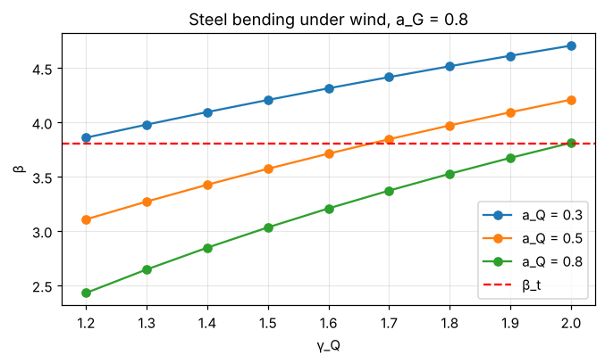
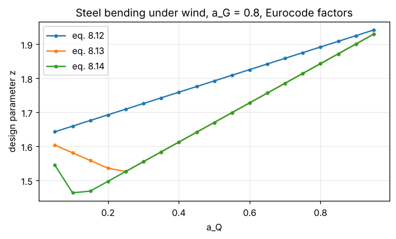

15. Lesson 3 — The design equation and one design situation#
A code does not tell the engineer to provide “a mean resistance of 2.4”. It gives a design equation: characteristic values, partial factors and combination rules. The engineer provides exactly the resistance the equation demands, and the reliability that results is whatever it is. Calibration turns this around: it computes the resulting reliability for many typical designs and adjusts the partial factors until it meets the target.
The building block is one design situation: a failure mode (material and mechanism), a dominating variable load, and the proportions of the loads. This lesson takes one of the 810 situations of the AHG model apart.
import os
import sys
import numpy as np
try:
import codecal as cc
except ImportError:
sys.path.insert(0, os.path.abspath('..'))
import codecal as cc
from codecal import plots
from codecal.plots import Figure
FIG = 'figures'
os.makedirs(FIG, exist_ok=True)
def save(fig, name):
"""Save a figure next to the lesson and show it (inline in Jupyter/Spyder)."""
fig.savefig(os.path.join(FIG, name), dpi=150, bbox_inches='tight')
try:
from IPython.display import display
display(fig)
except ImportError: # plain python: the PNG in figures/ is the output
pass
model = cc.ahg_model(n_mcs=1_000_000)
15.1. 1. One design situation#
Steel bending under wind, with 80 % of the permanent load being self-weight (\(a_G = 0.8\)) and the variable load making up half of the characteristic load (\(a_Q = 0.5\)). The seven random variables:
steel = next(m for m in model.failure_modes if m.name == 'Steel bending')
wind = next(l for l in model.loads if l.name == 'wind')
s = cc.DesignSituation(steel, wind, a_G=0.8, a_Q=0.5, weight=1.0, model=model)
for name, v in zip(s.variable_names, s.variables):
print(f" {name:4s} {v}")
Θ_R Θ_R steel bending: Lognormal(mean=1.15, CoV=0.05), x_k=1
R Steel yield strength: Lognormal(mean=1, CoV=0.05), x_k=0.83
Θ_E Load-effect model uncertainty: Lognormal(mean=1, CoV=0.1), x_k=1
G Self-weight steel: Normal(mean=1, CoV=0.025), x_k=1
P Permanent load (other than self-weight): Normal(mean=1, CoV=0.1), x_k=1
Θ_Q Wind model uncertainty: Lognormal(mean=0.97, CoV=0.26), x_k=1
Q Wind, 50-year maximum: Gumbel(mean=1, CoV=0.14), x_k=1.08
15.2. 2. The design equation gives the design parameter \(z\)#
EN 1990 eq. 8.12 (the former 6.10) for this situation reads
Everything on the right is known once the partial factors are chosen; the left side is the design resistance. \(z\) is the amount of mean resistance per unit of mean load that the engineer ends up providing. With the current Eurocode values \(\gamma_G = 1.35\), \(\gamma_Q = 1.5\):
pf = cc.START_VALUES
z = s.design_parameter(pf, '8.12')
print(f"γ_G = {pf.gamma_G}, γ_Q = {pf.gamma_Q_of('wind')}, γ_M = {steel.gamma_M}")
print(f"characteristic values: θ_R,k = {steel.theta_R.char}, r_k = {steel.R.char}, "
f"g_k = {steel.G.char}, p_k = {model.P.char}, q_k = {wind.Q.char:.3f}")
print(f"design parameter z = {z:.4f}")
γ_G = 1.35, γ_Q = 1.5, γ_M = 1.0
characteristic values: θ_R,k = 1.0, r_k = 0.83, g_k = 1.0, p_k = 1.0, q_k = 1.084
design parameter z = 1.7924
15.3. 3. The limit state and its reliability#
With \(z\) fixed, the structure fails when
All seven variables have mean 1 (the loads: mean of the 50-year maximum). FORM gives the reliability index of this design:
ls = s.limit_state(z)
res = cc.form(ls)
print(f"β = {res.beta:.3f} (P_f ≈ {res.pf:.2e} in 50 years), {res.iterations} iterations")
print("sensitivities α² :", res.sensitivities(s.variable_names))
print("design point x* :", {n: round(float(v), 3) for n, v in zip(s.variable_names, res.x_star)})
β = 3.573 (P_f ≈ 1.77e-04 in 50 years), 11 iterations
sensitivities α² : {'Θ_R': 0.0385, 'R': 0.0385, 'Θ_E': 0.1533, 'G': 0.0005, 'P': 0.0005, 'Θ_Q': 0.4946, 'Q': 0.2741}
design point x* : {'Θ_R': 1.109, 'R': 0.964, 'Θ_E': 1.144, 'G': 1.002, 'P': 1.008, 'Θ_Q': 1.785, 'Q': 1.315}
Two things to notice:
β is below the target 3.8 — with the current factors this steel beam under wind is on the low side, as the AHG study found.
Three variables carry almost all the uncertainty: the wind model uncertainty \(\Theta_Q\), the wind load \(Q\) itself and the load-effect model uncertainty \(\Theta_E\). The steel strength hardly matters (CoV 0.05). The design point shows the “most likely failure”: the wind model uncertainty at 1.8 (its mean is 0.97) and the wind load 30 % above its mean 50-year maximum, while the resistance side sits close to its means.
15.4. 4. What the partial factors do#
Raising \(\gamma_Q\) raises \(z\) and thus β. The slope is the currency of calibration: how much β per unit of γ.
gammas_Q = np.linspace(1.2, 2.0, 9)
fig = Figure(figsize=(7, 3.6))
ax = fig.subplots()
for a_Q in (0.3, 0.5, 0.8):
s_a = cc.DesignSituation(steel, wind, a_G=0.8, a_Q=a_Q, weight=1.0, model=model)
betas = [s_a.reliability(pf.with_values(['gamma_Q'], [g]), '8.12')[0] for g in gammas_Q]
ax.plot(gammas_Q, betas, 'o-', label=f'a_Q = {a_Q}')
ax.axhline(3.8, color='r', ls='--', label='β_t')
ax.set_xlabel('γ_Q')
ax.set_ylabel('β')
ax.set_title('Steel bending under wind, a_G = 0.8')
ax.grid(alpha=0.3)
ax.legend()
save(fig, 'lesson03_beta_vs_gammaQ.png')

The more the variable load dominates (\(a_Q\) large), the more \(\gamma_Q\) helps — and the lower β is with the present values. For \(a_Q = 0.3\), \(\gamma_Q\) is almost irrelevant; there \(\gamma_G\) is the lever. A single pair of factors cannot make all designs equally reliable; it can only make them reliable enough on average — hence the weighted objective of lesson 5.
15.5. 5. The three design equations#
EN 1990:2023 offers three fundamental combinations. Eq. 8.12 uses the full variable load with the full permanent load. The two-combination rules take the less favourable of two expressions: in 8.13 the variable load is reduced by \(\psi_0\) in the first and the permanent load by \(\xi\) in the second; in 8.14 the first expression has no variable load at all.
a_Qs = np.linspace(0.05, 0.95, 19)
fig = Figure(figsize=(7, 3.6))
ax = fig.subplots()
for eq in ('8.12', '8.13', '8.14'):
zs = [cc.DesignSituation(steel, wind, 0.8, a, 1.0, model).design_parameter(pf, eq) for a in a_Qs]
ax.plot(a_Qs, zs, 'o-', ms=3, label=f'eq. {eq}')
ax.set_xlabel('a_Q')
ax.set_ylabel('design parameter z')
ax.set_title('Steel bending under wind, a_G = 0.8, Eurocode factors')
ax.grid(alpha=0.3)
ax.legend()
save(fig, 'lesson03_z_vs_equation.png')

With the present \(\xi = 0.85\) and \(\psi_0 = 0.6\), eqs. 8.13 and 8.14 demand less resistance than 8.12 at every load ratio — which is why a calibration of 8.13/8.14 also has to decide on \(\xi\).
15.6. Exercises#
Repeat section 3 for concrete bending under imposed load. Which variables dominate there?
For the steel/wind situation, find by hand the \(\gamma_Q\) that gives β = 3.8 at \(a_Q = 0.5\) (use
scipy.optimize.brentq).Set the wind model uncertainty’s CoV to 0.15 instead of 0.26 (build a new
rvandVariableLoad) and see what happens to β and α². This is the single most influential assumption of the whole AHG model.